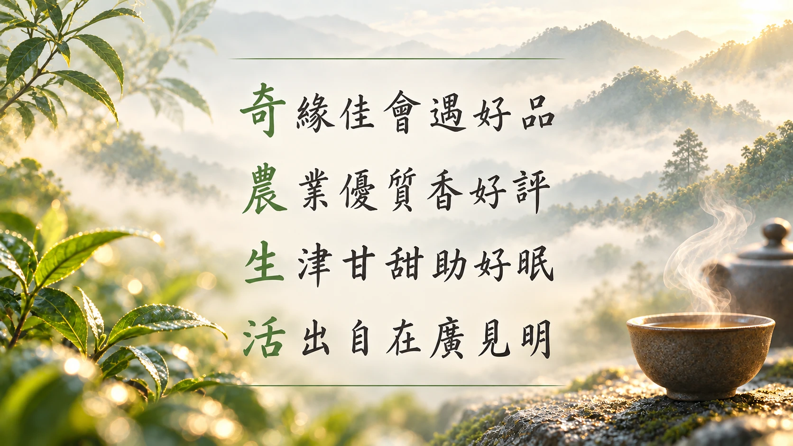
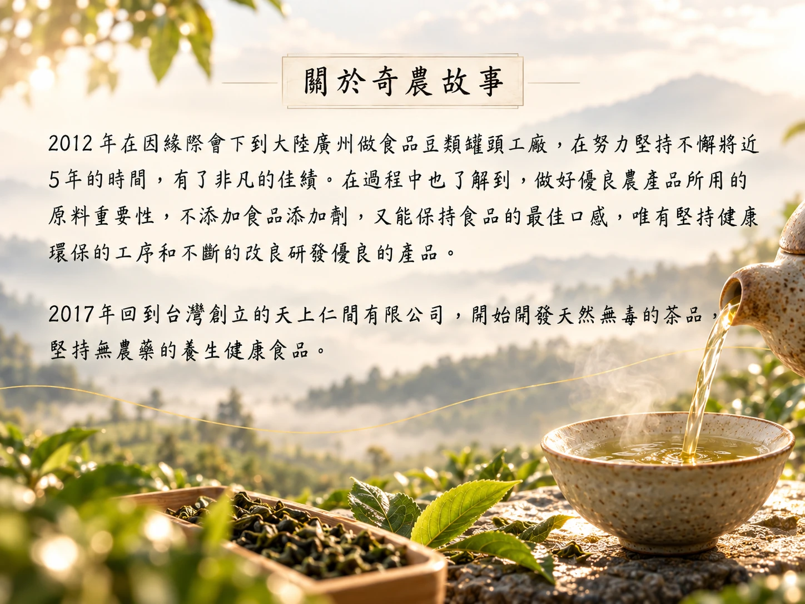
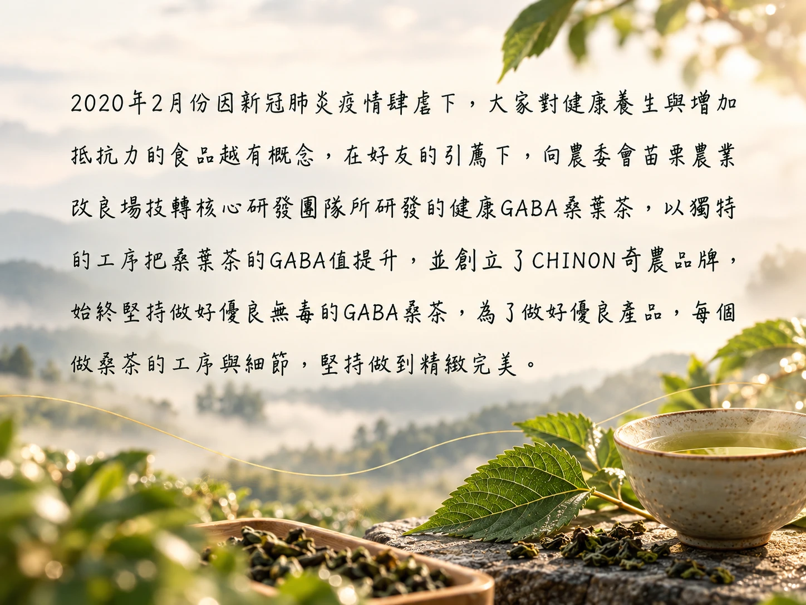

OUR STORY
關於奇農
來自土地・專注天然・堅持品質
ABOUT CHINON
奇農生活
奇農以土地、原料與製茶工藝為核心，持續把台灣桑葉製成更容易融入日常生活的茶品。
品牌以 GABA 桑茶為核心，從原料挑選、製作工藝、口味到檢驗資訊建立完整產品脈絡。

OUR JOURNEY
品牌歷程
保留原網站品牌歷程素材，重新以溫暖生活感版面呈現。



來自土地・專注天然・堅持品質
奇農以土地、原料與製茶工藝為核心，持續把台灣桑葉製成更容易融入日常生活的茶品。
品牌以 GABA 桑茶為核心，從原料挑選、製作工藝、口味到檢驗資訊建立完整產品脈絡。

保留原網站品牌歷程素材，重新以溫暖生活感版面呈現。

